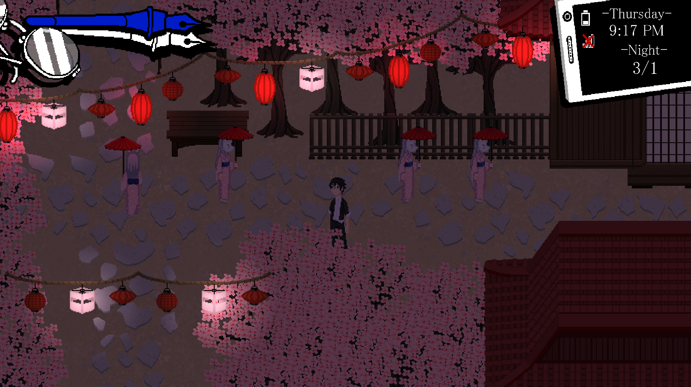
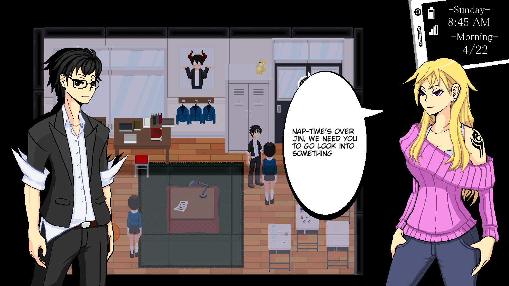
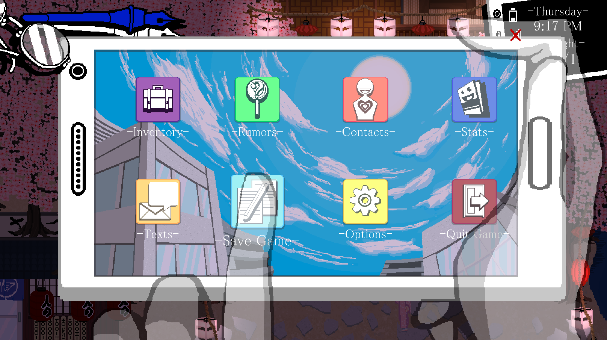

Rainfall: 2018 Year In Review
Overview
Some fun stats of what we accomplished in 2018: - 200 pages of dialogue written - 2 relationships fully implemented - 31 days of gameplay - 117 master branch commits - 9 blog posts posted about the game - 26 locations added
Overall we’re really happy with the progress made this year. Large scale shifts to the game’s core design like the inclusion of the deck building elements, adding in Relationships, and implementing Lockon Acknowledge have allowed us to solidify Rainfall’s base experience. While starting to present our game’s concept and screenshots to the world have led to rendering and art changes like changing our visual novel art style and implementing pixel perfect cameras and movement.
We didn’t finish in producing a demo of our game that a general audience could play. So as we venture into 2019 our goal is to be able to finish another 2 arcs leading us to the climax of the game. We’d also like to fix all of the remaining bugs from the start of the game to the end of Mari’s Dungeon and produce a demo product that represents the vertical slice of our game which, ideally, contains around a couple hours of content.
Another major feature we haven’t placed any focus on yet is sound design and music. The game currently has a single ambient piece of music so we’d like to start adding in other effects, even if they serve as placeholders.
Finally, writing up blog posts about the game was a major change to our flow that we hadn’t done before and it turned out rather successfully. We’d like to continue this up next year and include more posts on different game design aspects of the game like in the On Card Game Archetypes article.

Major Milestones
Lockon Acknowledge and the Calendar System
The game uses an Active Social System, where social interaction and dialogue evolve from turn-based to real-time events. Our goal was to create a system that provides contextual, dynamic opportunities to interact with NPCs and the environment. Gathering rumors reveals new chat options, ignoring characters may change their reactions, and deciding how and where you interact with characters will affect how they view you. It's not just what you say, but what you do that decides the outcome.
To support this, a node-based scene system known as our Screenplay was used to build up a knowledge base of events for a situation in order to dynamically generate how a scene could play out based off of your actions similar to a Choose Your Own Adventure Novel.
All of these events are then placed within the game’s calendar system. The player engages with different events in each of the game’s major time chunks: Morning, Afternoon, and Night. Each section for each day is filled with a varying mixtures of main storyline and optional events, and how the player spends their time will change based on what is available to them in that particular day. Some NPCs will only be available at Night, the school is only open during Morning and Afternoon, and your friend may not want to grab lunch on Monday Mornings, etc.

Pixel Perfection
Pixel perfection and the changes to our rendering pipeline were some of the largest scale changes on the backend during this period. Up until now, our camera and the sprites themselves did not attempt to conform to the sprite boundary, so when setting up our scenes sprites would frequently be placed on positions that would render them improperly.
This process was explained in further detail in our Pixel Perfection blog post.
Relationships
During free time segments of our game, the player can choose to spend time either increasing their various stats, work part time shifts at different locations, or interact and hang out with the people that they’ve become friendly with. Each of these relationships will start at Rank 0 and can be leveled up to Rank 10 with each interaction event causing a rank up. Different rank levels also carry different rewards with them. During this last year we implemented both Yumeko and Toro’s Relationship Routes.
Menu and Texts
For our menu we wanted to create an overlay that utilized the cellphone heads-up display normally in the upper-right portion of the screen and theme each of the sub-menus inside to be like the different apps on a phone. Some of the screens currently feature placeholder layouts and art but will be updated to be fully functional as needed within development.
A text messaging system has been implemented into the Phone Menu allowing for other characters to send you messages. The Active Choice system was carried over to here as well with the exception of timed active choices. As such, some texts may be limited to having a response within that day or time chunk. The player can also use the rumors they’ve found to provide different responses here as well.
Shift to Action Card Game Combat
One of the largest and most beneficial changes to the game’s core structure, was shifting from the pure action combat to a hybrid Action-Card System. Drawing heavy inspirations from Hearthstone’s Adventure Mode and Slay the Spire, we merged the dungeon crawling aspects of our previous design while merging in deck building elements.
The player starts out the game with a base deck of cards and by defeating enemies and clearing the dungeons they can earn cards from the combat side while in the social side of the game they can earn cards through the Otaku Goods shop, progressing in relationships, or completing side content. This ties the social side into the combat side further and gives a reason for the player to perform well and seek to explore both sides of the game fully.
The deck itself will be limited in size so as you collect more cards you will have to choose which cards and playstyle you want to incorporate into your deck. One of our new core philosophies of this system is that we want the player to have to change their deck throughout the game to counter bosses and dungeons.To facilitate this we’ve created the Archetype System. An archetype is deck that the player builds along with certain passive effects. They grant different variations on the Chuuni Meter among other benefits. They are meant to encourage certain deck archetypes and certain enemy encounters will be stronger or weaker versus the deck archetype. These archetypes are acquired over the course of the game as the player beats story events and can be swapped out when out of combat.